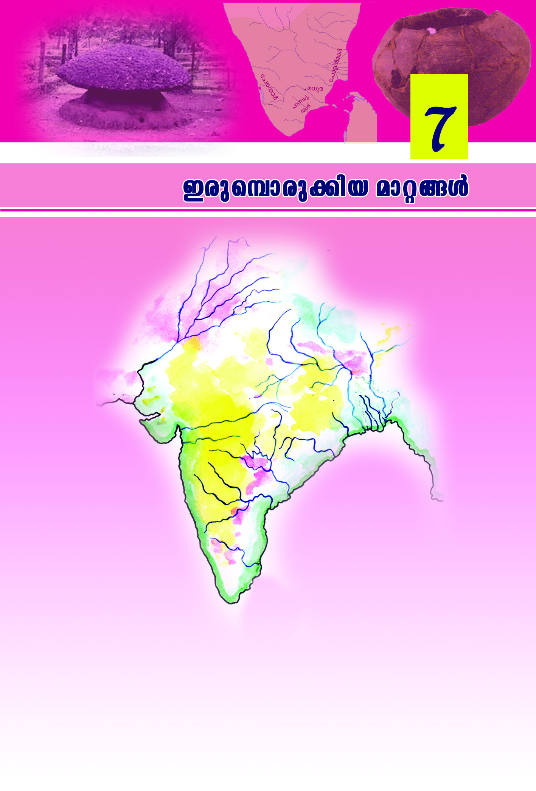
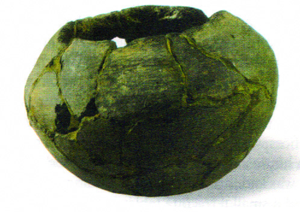
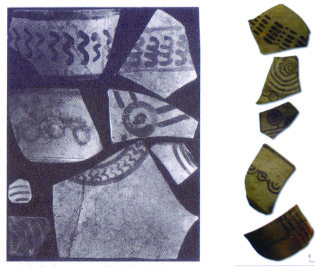
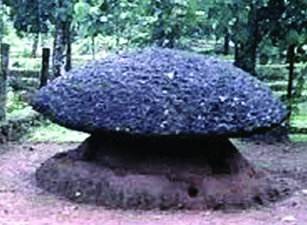
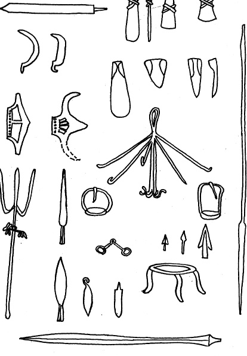

X∂n-´p≈ `q]-S-Øn¬ tcJ-s∏-Sp-Øn-bn-´p≈ \Zn-Iƒ GsX-√mw? Is≠-
Øp-I.
$ kn‘p
$
$
$
$
$
$
kn‘p
Qew Nn\m_v
chn
kXvePv
_nbmkv
KwK
Nn{Xw 7.1
Page 7

Page 8
kmaq-ly-imkv{Xw V
8888
88
Ch-bn¬ C¥y-bpsS hS-°p-]-Sn-™m-dv {]tZ-iØp≈h GsX-√m-amWv?
kn‘phpw AXns‚ t]mjI \Zn-I-fp-amWh. \Ωƒ ap≥]v N¿®sNbvX
lc-∏≥ kwkvImcw hf¿∂p-h-∂-Xv Cu \Zo-X-S-ß-fn-em-bn-cp∂p. GI-
tZiw 3500 h¿j-߃°p-apºv Bcy-∑m¿ F∂dnb-s∏-Sp∂ Hcp P\-hn-
`mKw Cu {]tZ-i-tØ°v IpSn-tbdn. thZ-ß-fn¬ \n∂mWv Ch-sc-°p-
dn®v hnhcw e`n-°p-∂-Xv. thZ-`mj kwkvIr-X-am-bn-cp-∂p. thZ-߃
hmsam-gn-bm-bmWv BZy-Im-e-ß-fn¬ {]N-cn-®n-cp-∂-Xv. thZ-ß-fn¬ ]cm-
a¿in-®ncn°p∂ a\p-jy-Po-hnXw \ne-\n-∂n-cp∂ Imew thZ-Imew F∂-
dn-b-s∏-Sp-∂p. thZ-ImesØ-°p-dn-®p≈ hnh-c-ß-f-S-ßnb Nm¿´v {i≤n°q.
thZ-Imew
1500 ˛ 600 _n.kn.
]n¬°m-e-thZImew
1000˛600 _n.kn.
EtKzZImew
1500˛1000 _n.kn.
EtKzZw
kma-thZw
AY¿Δ-thZw
bPp¿thZw
Fs¥√mw hnh-c-ß-fmWv CXn¬ \n∂v e`n-°p-∂Xv?
$
_n.kn. 1500 apX¬ _n.kn. 600 hsc-bp≈ Ime-amWv thZ-Imew.
$
BZyw cNn® thZw EtKzZ-am-Wv.
$
EtKzZØn¬ ]cma¿in®ncn°p∂ PohnXw \ne\n∂ncp∂Imew.
$
$
$
Imen-Iƒ kº-Øm-b-t∏mƒ
EtKz-Z-Im-esØ Bcy-∑m-cpsS Pohn-X-sØ-°p-dn®v Ncn-{X-Im-c-\mb
F.F¬. _mjmw ]d-bp-∂Xv {i≤n-°q.
""I¿j-I¿ {]m¿∞n-®Xv Imen-Isf In´m-\m-bn-cp-∂p. tbm≤m-°ƒ bp≤w
sNbvXXv I∂pImen-Isf ]nSn-s®-Sp-°m-\m-bn-cp-∂p. ]ptcm-ln-X≥am¿
bmK-߃ \S-Øn-bXv I∂pImen-Isf {]Xn-^-e-ambn e`n-°m-\m-bn-
cp∂p.''
Cu Ime-L-´-Øn¬ F¥p-sIm-≠m-bn-cn°pw I∂pImen-Iƒ°v C{X
{]m[m\yw e`n-®Xv?
Page 9



8989
89
Ccp-sºm-cp-°nb am‰-߃
Nmc-\n-d-Ønep≈ a¨]m{Xw
EtKz-Z-Im-esØ kºØv I∂pImen-I-fm-bn-cp-∂p. P\-ß-fpsS {][m\
sXmgn¬ I∂pImen-h-f¿Ø-em-bn-cp-∂p. AtXm-sSm∏w Irjnbpw sNbvXn-
cp-∂p. -_m¿fn-bm-bn-cp∂p {][m\ hnf. Imen-Isf ta®p-\-S∂ Bcy-∑m-
cpsS Iq´w tKm{Xw F∂-dn-b-s∏-´p.- Cßs\bp≈ Hmtcm tKm{XØns‚bpw
Xe-h≥ cmP≥ F∂-dn-b-s∏´ncp∂p. I∂p-ImenIƒ°p-th≠n tKm{X-߃
XΩn¬ kwL¿j-Øn-te¿s∏-´n-cp-∂p. tKm{X-߃ XΩnepw tKm{X-ßfpw
Bcy-∑mc√mØ-hcpw XΩn-epw bp≤-߃ \S-∂n-cp∂p. IpXn-c-Ifpw
sNºpsIm≠pw sh¶-ewsIm-≠p-ap≈ Bbp-[-ßfpw Bcy-∑m¿°p-≠m-bn-
cp-∂p. Ah-bpsS klm-b-Øm¬ Bcy-∑m-c-√m-Ø-hsc Ah¿ Iog-S-°n.
Iog-S-°-s∏-´-h¿ Zmk≥amsc∂pw Zkyp°sf∂pw Adn-b-s∏´p. Ah-cpsS
I∂pImen-Isf Bcy-∑m¿ ssI°-em-°n.
NphsS X∂n-´p≈ kqN-I-ß-fpsS ASn-ÿm-\-Øn¬ EtKz-Z-
ImePohnXsØ lc-∏-bn-se Pohn-X-hpambn Xmc-Xayw
sNøpI.
˛ sXmgn¬
˛ D]-I-c-W-߃
EtKz-Z-Im-eØv P\-߃ C{μ≥,
hcp-W≥, A·n F∂o tZh-∑m-
scbpw AXnYn, Dj v XpS-ßnb
tZh-X-am-scbpw Bcm-[n-®n-cp-
∂p. Cu Ime-L-´-Øn¬ D]-
tbm-Kn-®n-cp∂ a¨]m-{X-߃°v
Nmc-\n-d-ambn-cp∂p. Nn{XØn¬
ImWp-∂Xv A∂v D]-tbm-Kn-®n-
cp∂ a¨]m-{X-ß-fn¬ H∂ns‚
tijn-∏m-Wv.
KwKmka-X-e-Øn-te°v
kma-th-Zw, bPp¿th-Zw, AY¿Δ-thZw F∂n-h-bn¬ ]cm-a¿in-®ncn°p∂
a\pjy-Po-hnXw \ne-\n-∂n-cp∂ Imew ]n¬°m-e-th-Z-Imew F∂-dn-b-
s∏Sp∂p. EtKz-Z-Im-e-L-´-Øn¬ I∂pImen-Isf ta®p \S∂ Bcy∑m¿
]n¬°m-e-th-Z-Im-e-L-´-am-b-t∏m-tg°pw KwKm-k-a-X-e-Øn¬ FØn-
t®¿∂p. KwKm-\-Zn-bpsS Np‰p-ap≈ {]tZ-i-amWv KwKm-k-a-X-ew. tKm{X-
߃ XΩn-ep≈ Ie-l-ßfpw ]pXnb tKm{X-ß-fpsS D¤-hhpw P\-
kwJymh¿≤-\hpw KwKm-k-a-X-e-Øn¬ Bcy∑m¿ FØn-t®-cp-∂-Xn\v
Imc-W-am-bn.
Page 10


kmaq-ly-imkv{Xw V
9090
90
`q]Sw (Nn{Xw 7.1) \nco-£n®v KwKm-k-a-Xew C¥y-bpsS GXp `mKØv
ÿnXn sNøp∂p F∂v Is≠Øp-I. C∂v GsXms° kwÿm-\-ß-fn-
emWv KwKm-k-a-Xew hym]n-®n-´p-≈Xv?
KwKm-k-a-X-e-Øns‚ {]tXy-I-X-Iƒ ]cn-tim-[n-°mw.
-˛
h≥a-c-߃ \nd™ ImSp-Iƒ
˛
^e-`q-bn-jvTamb F°¬aÆv
-˛
kar≤-amb ag
KwKm-k-a-X-e-Øn-te°p hcp-tºmƒ Bcy-∑m-cqsS ssIh-i-ap≈ Bbp[-
߃ GXv teml߃ sIm≠v \n¿Ωn-®-h-bm-bn-cp∂p?
sNºpsIm≠pw sh¶-ewsIm≠pw \n¿Ωn® Bbp-[-߃ D]-tbm-Kn®v
KwKm-k-a-X-e-Øn¬ aÆn¬ Inf-bv°m\pw ac-߃ apdn-°m\pw {]bm-
k-am-bn-cp∂p. AXn-\m¬ Ah¿ ImSn\v Xobn-´mWv apt∂-dn-b-Xv. ]s£
ac-ß-fpsS Ip‰n-Iƒ Ah¿°v ho≠pw XS- -߃ D≠m-°n. aÆn¬
Inf-bv°m\pw ac-߃ apdn-°m\pw ImTn-\y-ta-dnb temlwsIm≠v
\n¿Ωn® ]Wn-bm-bp-[-߃ Bh-iy-am-bn-cp-∂p. CXv Ccp-ºns‚ Is≠-
Ø-en-te°v \bn®p.
C∂v \Ωƒ Irjn°pw ac-߃ apdn-°p-∂-Xn-\pw D]-tbm-Kn-
°p∂ D]-I-c-W-ßfpw Bbp-[-ßfpw GXv temlw sIm≠v
\n¿Ωn-®-h-bmWv?
sNºv, sh¶ew F∂nhbn¬ \n∂v Ccp-ºn-\p≈ hyXymkw
F¥mWv?
KwKm-k-a-Xew h≥tXm-Xn¬ Ccp-ºns‚ \nt£-]-ap≈ {]tZ-i-am-bn-cp∂p.
Ccpºv Is≠-Øn-b-tXm-Sp-IqSn Dd-∏p≈ D]IcW-ßfpw Bbp-[-ßfpw
D≠m-°n. ImSp-Iƒ sh´n-sØ-fn-®p. Ie-∏-I-ƒ D]-tbm-Kn®v \new Dg-pXp.
Irjn apJysXmgn-embn amdn. Ccpºv D]-tbm-Kn® Cu Ime-L´w
CcpºpbpKw F∂-dn-b-s∏-Sp∂p.
KwKm-k-a-X-e-Ønse kml-Ncy߃ Irjn°v F-{X-am{Xw A\p-Iq-e-
am-bn-cp-∂p? \nß-fpsS A`n-{]mbw Fgp-Xp-I.
I∂pImenhf¿Ø-en¬ \n∂v Irjn-bn-te-°p≈ am‰-Øns‚ ^e-߃
Fs¥-√m-am-bn-cp∂psh∂v t\m°mw.
˛
ÿnc-hmkw Bcw-`n®p
˛
Im¿jn-tImev]m-Z\w h¿≤n®p
˛
an®w-h∂ D¬∏-∂-߃ ssIam‰w sNbvXp
KwKm-k-a-X-e-Ønse a\p-jy-Po-hn-X-Øn¬ Ccp-ºns‚ I≠p-]n-Sn-Øhpw
D]-tbmKhpw D≠m°nb am‰-߃ N¿® sNbvXv Ipdn-∏m-°p-I.
Page 11

9191
91
Ccp-sºm-cp-°nb am‰-߃
]n¬°m-e--th-Z-Im-eØv P\-߃ D]-tbm-Kn® a¨]m-{X-ß-ƒ "Nmbw
tX® Nmc-\nd ]m{X-߃' (Painted Grey Ware) F∂mWv Adn-b-s∏-Sp-
∂Xv. Ah-bn¬ Nne-Xns‚ tijn-
∏pI-fmWv Nn{X-Øn-¬ ImWp-∂Xv.
P\-߃
ÿnc-hmkw
Bcw-
`n®tXmsS Ah-cpsS Pohn-X-{I-a-
Øn¬ Nne am‰-ß-fp-≠mbn. kaq-l-
Øn¬ \ne-\n∂ sXmgn-ens‚ ASn-
ÿm-\-Øn¬ P\-߃ \mev hn`m-K-
ß-fmbn hn`-Pn-°-s∏´p. {_m“-W¿,
£{Xn-b¿, sshiy¿, iq{Z¿ F∂n-ß-
s\-bp≈
Cu
hn`-P\w
"NmXp¿h¿Æyw' F∂-dn-b-s∏-´p.
EtKzZ-Im-eØv GsXms° tZh-∑m-
scbpw tZh-X-amsc-bp-amWv P\-߃ Bcm-[n-®n-cp-∂-Xv? ]n¬°me
thZIm-eØv Cu Bcm-[-\m-co-Xn-bpsS {]m[m\yw Ipd-™p. ]I-cw,
bmK-߃°v {]m[m-\y-ap≈ Bcm-[\mcoXn hym]-I-ambn. Imen-Isf
_en-b¿∏n°p-∂-h-bm-bn-cp∂p an° bmK-ßfpw.
EtKz-Z-Im-e-sØbpw ]n¬°methZIme-sØbpw Nne {]tXy-I-X-Iƒ
NphsS tImf-ßfn¬ sImSpØn´p-≠v. Ah GXp Ime-hp-ambn _‘-
s∏-´n-cn-°p∂p F∂v Ahbv°v t\sc-bp≈ tImf-ß-fn¬
tcJs∏SpØpI.
Nmbw tX®
Nmc-\n-d-∏m-{X-ßfpsS `mK-߃
{]tXy-I-X-Iƒ
EtKz-Z-Imew/
]n¬°m-e-th-Z-Imew
Irjn apJy-sXm-gn-embn kzoI-cn®p
bmK-߃ hym]-I-ambn
Ccpºp]I-c-W-߃ D]-tbm-Kn®p
Imen-h-f¿Ø-em-bn-cp∂p apJy-sXm-gn¬
ÿnc-hm-k-ap-d-∏n®p
C{μ≥, hcp-W≥ XpS-ßnb tZh-∑msc
Bcm-[n®p
Nmbw -tX® Nmc-\n-d∏m-{X-߃ D]-tbm-Kn-®p
I√p-Iƒ IY ]d-bp∂p
CcpºpbpKIme-L-´-Øn¬ tIcfw Dƒs∏-´ncp∂ Xan-g-I-Øv P\-Po-hnXw
Fß-s\-bm-bn-cp∂psh∂v N¿® sNømw. {]mNo\ImesØ Z£n-
tW¥y≥ {]tZ-i-ß-fmWv Xan-gIw F∂-dn-b-s∏-´n-cp-∂Xv.
Page 12


kmaq-ly-imkv{Xw V
9292
92
IpS-°√v
\m´pI√v
alm-in-em-kw-kvImc Ime-L-´-Ønse Ccp-ºp-]-I-c-W-߃
{]mNo\ Xan-g-IØv arX-i-co-c-߃ AS°w sNbvX-Xn\v apI-fn¬ \m´n-
bn-cp∂ hen-b I√p-I-fmWv Nn{X-Øn-ep-≈Xv. hnhn[ cq]-ßfnem-Wnh
ImW-s∏-Sp-∂-Xv. Chsb "alm-in-e-Iƒ' F∂v hnfn-°p∂p. arX-i-co-c-
߃ AS°w sNbvX Ipgn-am-S-ß-fn¬ \n∂pw A∂sØ P\߃ D]-
tbm-Kn-®n-cp∂ Ccp-ºm-bp-[-߃, hnhn[ D]-I-c-W-߃, a¨]m-{X-߃,
[m\ym-h-in-jvS-߃ XpSßn [mcmfw hkvXp-°ƒ Is≠-Øn-bn-´p-≠v.
Cu almineIƒ A°m-e-sØ-°p-dn-®p≈ hnh-c-߃ Xcp∂ sXfn-hp-
I-fm-Wv. Cu Imew alm-in-em-kw-kvIm-c-Imew F∂dn-b-s∏-Sp-∂p.
Xmsg \¬In-bn-cn-°p∂ Nn{Xw t\m°q. alm-in-em-kw-kvImc Ime-L´-
Ønse a\p-jy¿ D]-tbm-Kn-®n-cp--∂- Bbp-[-ßfpw D]-I-c-W-ß-fp-amWv
AXn-ep-≈Xv. Ah-sb√mw Ccp-ºp-sIm-≠v D-≠m-°n-bh Bbn-cp∂p.
NphsS X∂n-´p≈ Nn{X-߃ t\m°q
Page 13


9393
93
Ccp-sºm-cp-°nb am‰-߃
tNc-∑m¿
]mfiy-
∑m¿
tNmf-∑m¿
a[pc
kwL-Im-e-Z-£n-tW-¥y
BZy-Ime Xang-IØnse Ccp-ºp-bpKw alm-in-emkw-kvImc
Ime-L´w F∂-dn-b-s∏-´-Xv F-¥p-sIm≠v? CXv inem-bp-K-Øn¬
\n∂v Fßs\ hyXym-k-s∏-´n-cn-°p-∂p?
{]mNo\ Xan-gIsØ P\-Po-hn-XsØ°pdn®v alm-in-em-kvam-c-I-ßfn¬
\n∂pw ]g-¥-angv]m´p-I-fpsS kam-lm-c-ß-fn¬\n∂pw hnhcw e`n-°p∂p.
]g-¥-an-gv]m-´p-Iƒ kwLwIrXn-Iƒ F∂pw Adn-b-s∏-Sp-∂p. F¥p-sIm-
≠m-bn-cn°mw Chsb kwLw IrXn-Iƒ F∂p hnfn-°p-∂Xv? a[pc
tI{μ-am°n `cWw \S-Øn-bn-cp∂ ]mfiy-∑m-cpsS t{]m’m-l-\-Øn¬
kmln-Xy-Im-c≥am-cpsS Iq´mbva {]mNo\ Xan-g-IØv \ne-\n-∂n-cp-∂p.
CXv "kwLw' F∂ t]cn-e-dn-b-s∏-´p. ]Øp-∏m´v, ]Xn-‰p-∏-Øv, AI-\m-
\q-dv, ]pd-\m-\qdv F∂n-h- kwLw-IrXnIfn¬ {][m-\s∏´-h-bmWv.
{]mNo\ Xan-g-Iw `cn-®n-cp-∂Xv ]mfiy-∑m¿, tNc≥am¿, tNmf-∑m¿
F∂o cmPhwi-ßfmbn-cp-∂p. Ch¿ aqth-¥-∑m-¿ F∂-dn-b-s∏-´p.
Xmsg \¬In-bn-´p≈ `q]-SØn¬ tNc-∑m¿, tNmf-∑m¿, ]mfiy-∑m¿
F∂n-h¿ `cWw \S-Ønb {]tZ-i-߃ tcJ-s∏-Sp-Øn-bn-´p≠v. tIcfw
Dƒ-s∏-Sp∂ {]tZ-iØv `cWw \S-Øn-bn-cp∂ cmP-hw-iw GXm-sW∂v
Is≠-Ømtam?
Page 14
kmaq-ly-imkv{Xw V
9494
94
]g-¥-angv]m´n-eqsS
kwLw IrXn-Iƒ \¬Ip∂ hnh-c-ßf\p-k-cn®v {]mNo\ Xan-g--Iw A©v
`qhn-`m-K-ß-fmbn Adn-b-s∏-´n-cp-∂p. Ch XnW-Iƒ F∂v hnfn-°-s∏´p.
XnW-Iƒ°v AXn-t‚-Xmb `qan-im-kv{X-]-c-amb khn-tijX-Iƒ D≠m-
bn-cp-∂p. Ah GsXm-s°-bm-sW∂v t\m°mw.
XnW-Iƒ
`qan-im-kv{X khn-tijX-Iƒ
Ipdn©n
ae-Iƒ/ae-tbm-c-߃
ap√
ImSv/]p¬taSv
]me
hc-≠ -{]-tZiw
acpXw
hb¬
s\bvX¬
Xoc-{]-tZiw
tIc-f-Ønse ap√-t»-cn, acp-Xq¿, ]me-°mSv XpS-ßnb ÿe-t∏-cp-Iƒ
tI´n-´pt≠m? Cu t]cp-Iƒ XnW-I-fp-ambn _‘-s∏´v cq]-s∏-´XmWv.
XnW-I-fpsS ]´n-I- t\m°n Cu t]cp-Iƒ GXv XnW-I-fp-ambn _‘-
s∏-´n-cn-°p∂p F∂v Is≠-Øm-at√m.
XnW-I-fp-ambn _‘-s∏´ ÿe-t∏-cp-Iƒ At\z-jn®v Is≠Øn ]´nI
Xøm-dm-°p-I.
Ipdn©n {]tZi-ß-fn¬ A∂v Ipcp-ap-fIv [mcm-f-ambn Irjn sNbvXn-
cp∂p. Ipcp-ap-fIv tXSn hntZ-in-Iƒ sXt° C¥y-bnse IS¬°-c-bn-
ep≈ ]´W-ß-fn¬ FØn-bn-cp-∂p. Cu Ime-L-´-Øns‚ khn-ti-j-X-
Iƒ A∂sØ {][m\- Ir-Xn-I-fn¬ ]cm-a¿in-®n-cp-∂p.
Nph-sS- X-∂n-´p≈ ]m´v {i≤n-°p. kwL-Im-e -Ir-Xn-bmb ]pd-\m-\q-
dn¬ \n∂v FSp-Øn-´p≈ hcn-I-fm-Wn-h:
ao≥ hn‰v ]Icw t\Snb s\¬°q-ºmcw sIm≠v
hoSpw Db¿∂ tXmWn-Ifpw
Xncn-®-dn-bm≥ ]mSn√m-Xm-bn.
A{]-Imcw Iq´n-bn-´n-cn-°p∂ apf-Ip-Nm-°p-Iƒ
i_vZm-b-am-\-amb Ic-bn¬\n∂pw
th¿Xn-cn-®-dn-bm≥ Ign-bmsX
hnj-an°pw ImWp∂ Bfp-Iƒ
I∏-ep-Iƒ sIm≠p-h∂ kz¿Æw
Page 15


9595
95
Ccp-sºm-cp-°nb am‰-߃
tXmWn-Iƒhgn- I-c-bn-se-Øp-∂p.
ae-bn¬\n∂v In´p∂ hn`-h-ßfpw
Ic-bn¬\n∂v In´p∂ hn`-h-ßfpw
tN¿Øv A¿∞n-Iƒ°v sImSp-°p-∂p.
Cu ]m´n¬ \n∂v Fs¥√mw hnh-c-ß-fmWv e`n-°p-∂Xv?
$
XnW-I-fnse D¬∏-∂-߃ ssIam‰w sNbvXn-cp-∂p.
$
Ipcp-ap-f-Iphym-]mcw h≥tXm-Xn¬ D≠m-bn-cp∂p
$
{]Xn-^e-ambn [mcmfw kz¿Æw e`n-®n-cp∂p
$
IS¬hgn -h-cp-∂-h-cp-ambn hym]m-c-_-‘-߃ D≠m-bn-cp∂p
$
Ipcpapf-In\p ]pdsa a‰p km[-\-߃ tXSnbpw Bh-iy--°m¿
FØn-bn-cp∂p
IqSp-X¬ hnh-c-߃ Is≠Øn tN¿°p-a-t√m.
sh¶-e-bpKIme-L-´-Øn¬\n∂v Ccp-ºp-bpKIme-Øn-te-s°-
Øp-tºmƒ a\p-jy-Po-hn-X-Øn-ep-≠mb am‰-߃ Fs¥√mw?
N¿® sNøpI.
kw{Klw
$
_n.kn. 1500 apX¬ 600 hsc-bp≈ Ime-L´w thZ-Imew F∂-dn-b-
s∏-Sp-∂p.
$
thZ-Im-esØ EtKz-Z-Im-ew, ]n¬°methZ-Imew F∂n-ß-s\- Xncn-
°p-∂p.
$
Cu Ime-L-´-ßfnse P\-ß-fpsS Pohn-X-co-Xn-Iƒ XΩn¬ \nch[n
hyXym-k-߃ D≠m-bn-cp-∂p.
$
]n¬°methZ-ImeL´-Øn-emWv C¥y-bn¬ Ccp-ºns‚ D]-tbmKw
hym]-I-am-b-Xv. AXp-sIm≠v Cu Imew C¥ybnse CcpºpbpKw
F∂-dn-b-s∏-Sp-∂p.
$
{]mNo\ Xan-g-IsØ CcpºpbpKw alm-in-em-kw-kvImcImew F∂-
dn-b-s∏-Sp-∂p.
$
hyXykvX `qan-imkv{Xkhn-tijX-Iƒ \ne-\n∂ XnW-Iƒ
{]mNo\ Xan-g-I-Øns‚ {][m\ khn-ti-j-X-bm-bn-cp-∂p.
Page 16

kmaq-ly-imkv{Xw V
9696
96
{][m\ ]T-\-t\-´-ß-fn¬ s]Sp-∂h
$
thZ-Im-e-L´w hni-Zo-I-cn-°p-∂p.
$
EtKz-Z-Im-e-L-´Ønse P\-Po-hn-XsØ Xncn-®-dn™v AXns\ lc∏-
bnse Pohn-X-hp-ambn Xmc-Xayw sNøp∂p.
$
]n¬°methZ-Im-e-L-´-Ønse P\-Po-hn-XsØ Xncn-®-dn™v
AXns\ EtKz-Z-Im-e-Pohn-Xhpambn Xmc-Xayw sNøp∂p.
$
alm-in-em-kwkvIm-c-ImeØns‚ khn-ti-j-X-Iƒ hniZ-am-°p-∂p.
$
XnW-I-fpsS {]tXy-I-X-Iƒ ]´n-I-s∏-Sp-Øp-∂p.
$
EtKzZ-Im-e-tØbpw ]n¬°me thZIm-e-tØbpw P\-Po-hn-Xw
XmcXayw sNøp-I.
$
kwL-ImeIrXn-I-fpsS ]´nI Xøm-dm-°p-I.
$
NphsS X∂n-´p≈ ]´n-I-bn¬ "F' hn`m-K-Øn-\-\p-tbm-Py-ambn "_n'
hn`mKw {Ia-s∏-Sp-Øp-I.
F
_n
Ipdn©n
hc-≠-{]-tZiw
ap√
hb¬
s\bvX¬
ae-Iƒ
]me
]p¬taSv
acpXw
Xoc-{]-tZiw
$
Ccpºv Is≠Øn D]-I-c-W-ß-fp-≠m°n D]-tbm-Kn-®Xv
a\pjyNcn{X-Ønse kp{]-[m\ Ime-am-bn-cp-∂p. ka¿∞n-°p-I.
hne-bn-cp-Ømw
XpS¿{]-h¿Ø\w
$
alm-in-em-kvam-c-I-ß-fpsS Nn{X߃ tiJ-cn®v Ipdn-∏p-Iƒ Dƒs°m-
≈p∂ Hcp B¬_w Xøm-dm-°p-I.